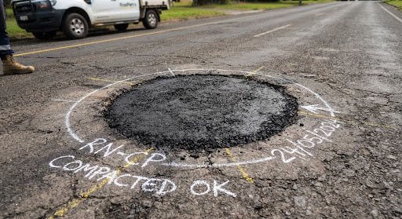
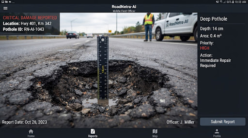

Assigned to you
1 urgentCorridor queue
Demo data · the crash frame is real Model B output
P1
RN-2026-004821
trafficLight traffic
5 min
· 3.7 km via NH-48
Arrive 08:51 · ambulance AMB-108 ahead of you
You
Incident
Directions
5 steps
share_location
Share live location
Control room sees your position on the corridor map
P2
RN-2026-004803
Assigned
Repair verification
Deep pothole, lane 1 · Sohna Road KM 6.2 · Vatika Chowk · PWD Gang-4


code
auto_awesome
Camera re-check: after you submit, Model A re-scans CAM-130's next sampled frame. The work order closes only if no pothole is detected at this spot.
Site checklist
0 / 5error
VS
Insp. Vikram Singh
Highway patrol · Quick Response Unit
QRU-12HP-4412
- Beat
- NH-48 KM 120–160
- Shift
- 06:00–14:00
This shift
2 h 46 m on dutyAlerts received
4
Scenes attended
2
Avg. arrival
6m 10s
Repairs verified
1
notifications_active
P1 alerts override silent mode
vibration
Vibrate for P2 potholes
map
Saved
Offline corridor map
NH-48 KM 110–175 · 18 MB
Prototype — IEEE Hackathon 2026 · Team ESPADA
Officer, unit and shift figures are demo data.